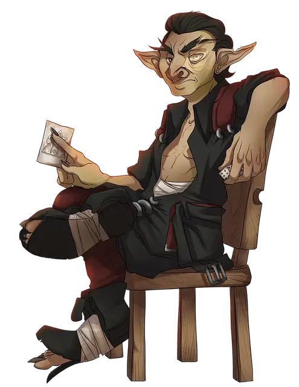

Сплагот Вернувшийся
Splugoth the Returned
Маленький Гуманоид (Гоблиноид), нейтрально-злой, именной НИП

Класс Доспеха 15 (природный доспех)
Хиты 27 (6к6 + 6)
Скорость 30 футов
| мод | спас | ||
|---|---|---|---|
| СИЛ | 10 | +0 | +0 |
| ЛОВ | 14 | +2 | +2 |
| ТЕЛ | 12 | +1 | +1 |
| мод | спас | ||
|---|---|---|---|
| ИНТ | 14 | +2 | +4 |
| МДР | 11 | +0 | +2 |
| ХАР | 10 | +0 | +0 |
Навыки Скрытность +6
Чувства тёмное зрение 60 футов, пассивное Восприятие 10
Языки Общий, Гоблинский, Драконий, Эльфийский
Опасность 2 (450 опыта)
Бонус мастерства +2
Особенности
Преимущество в обороне. До тех пор, пока два или более дееспособных союзника Сплагота находятся в пределах 5 футов от него, броски атаки против него совершаются с помехой.
Ловкий побег. Сплагот может в каждом своем ходу бонусным действием совершать действие Засада или Отход.
Прикосновение безумия. Сплагот с преимуществом совершает спасброски против того, чтобы стать очарованным или испуганным.
Действия
Мультиатака. Сплугот совершает две атаки Кинжалом.
Кинжал. . Рукопашная атака оружием: +4 к попаданию, досягаемость 5 футов, одна цель. Попадание: 4 (1к4 + 2) рубящего урона.
Слово Потустороннего мира (1/день). Сплугот запоминает и повторяет вслух несколько слов из места, в которое он попал, возвращаясь из иного мира в этот. Каждое выбранное им существо в пределах 30 футов от него, которое может его слышать, должно совершить спасбросок Мудрости Сл 12, иначе станет ошеломлённым до конца своего следующего хода.
Реакции
Поглощение атаки. Когда существо, которое видит Сплагот, попадает по нему рукопашной атакой оружием, оружие попадает в карман остаточной энергии воскрешения и быстро захватывается. Атака отменяется, и оружие не может быть использовано до тех пор, пока существо действием не совершит проверку Силы (Атлетика) Сл 12, чтобы вытащить его из Сплугота. Атаки естественным оружием могут быть отражены этой особенностью, но после этого они могут быть автоматически освобождены в конце хода атакующего существа.
Описание
“Я собираюсь дать тебе совет. Не доверяйте "Acquisitions Incorporated". И никогда, никогда, никогда не доверяй Омину Драну. Подождите, это два совета. Ты у меня в долгу.
Иногда гоблин не может передохнуть. Во-первых, вы попадаете в культ, который работает над освобождением бога смерти. Затем вы попадаете в плен к группе социопатов-авантюристов, которые в конечном итоге позволяют вам умереть после того, как вы спасаете их жалкие жизни. Одна минута, и ты мертвый гоблин по имени Сплаг. А потом ты снова жив, и кажется действительно хорошей идеей разыграть драму воскрешения с новым крутым именем - и гениальным планом холодной, холодной мести тем, кто тебя предал.
Время от времени (случайно) капризный и (совершенно непреднамеренно) эгоцентричный характер франшизы Acquisitions Incorporated может нанести некоторый сопутствующий ущерб членам, наемным работникам и персоналу. Когда это происходит, сопутствующий ущерб иногда сам по себе вызывает некоторый сопутствующий ущерб. Никто до конца не уверен, сколько раз Сплагот Вернувшийся на самом деле возвращался из мертвых. Но как главный гоблин группы, известной как Шестерка, он сделал месть Acq Inc и Омину Драну делом своей жизни. А затем работа его следующей жизни. И еще один после этого.